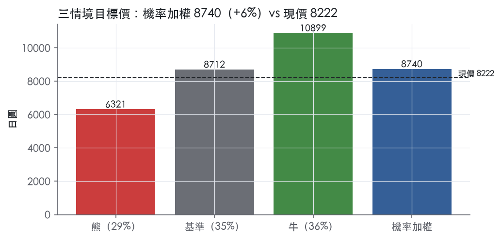
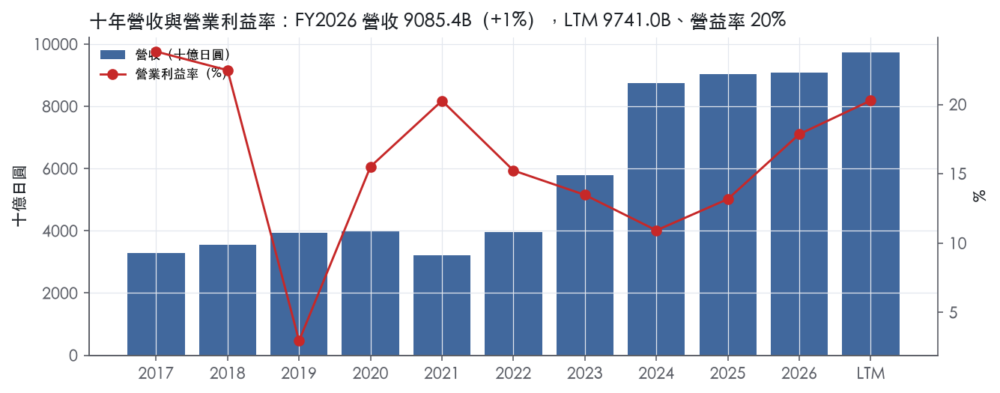
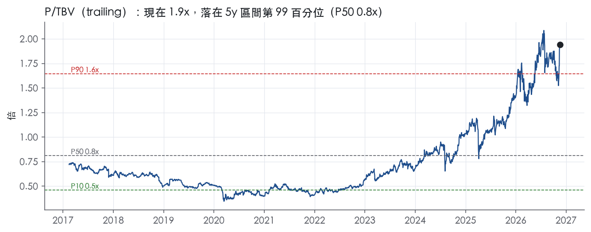
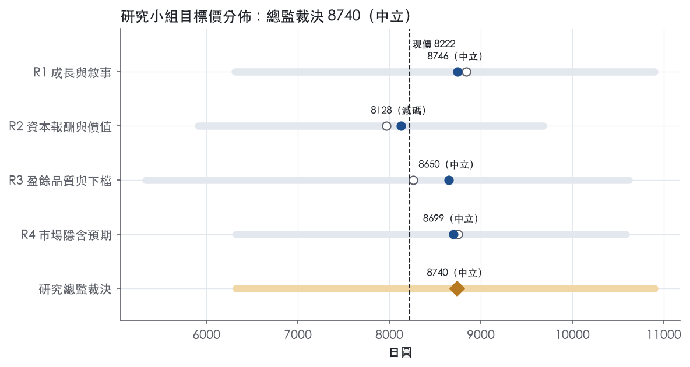
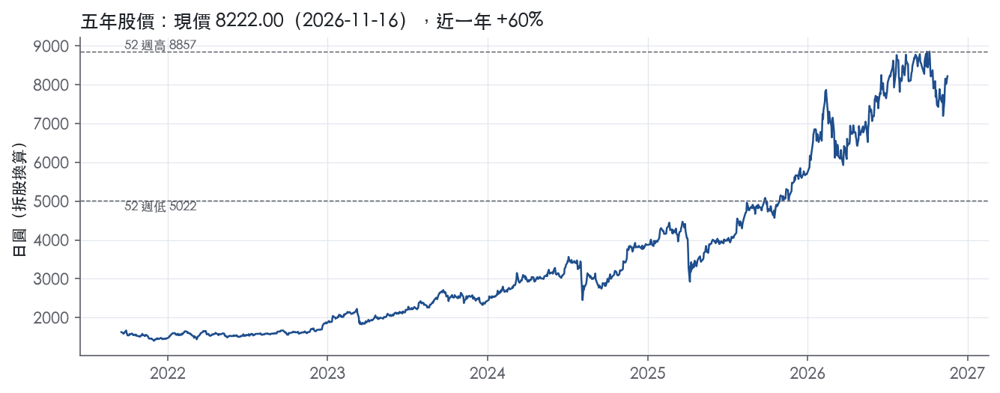

評等總表 › 未分類 › 8411.T
盈餘超標已定價，中性｜評等 中立｜目標價 8740
| 報告日 | 評等 | 目標價 | 當時股價 | 超額報酬 |
|---|---|---|---|---|
| 2026-11-16 | 中立 | 8,740 | 8,222 | +0.3% |
| 評等 | 中立 |
| 12 個月目標價 | 8740 日圓 |
| 現價 | 8222.00 日圓（2026-11-16） |
| 預期報酬 | 股價 +6.3%＋股息 1.8%＝總報酬 +8.1%；日股門檻 7.8%，超額 +0.3% |
| 估值方法 | P/TBV 1.9x，套在一年後的有形淨值 |
| 三情境 | 熊 6321／基準 8712／牛 10899 |
| 研究流程 | 四位研究員兩輪辯論＋研究總監裁決 |
| 資料來源 | EDINET、TDnet、J-Quants、Yahoo、FRED（全免費） |
盈餘超標已定價，中性（研究總監裁決，四位研究員兩輪辯論後）
評等 中立｜12 個月目標價 8740 日圓（總監三情境機率加權 8806 與研究員中位數 8675 各半）｜現價 8222.00（2026-11-16）
預期報酬：股價 +6.3%＋股息 1.8%＝總報酬 +8.1%。日股門檻 7.8%，超額 +0.3%。
估值方法：P/TBV 1.9x，套在一年後的有形淨值。三情境：熊 6321（29%）／基準 8712（35%）／牛 10899（36%）。
什麼會讓研究總監改變看法：11-20 説明会或 Q3 短信把全年計畫上修到 1,800B 以上且增益來自資金利益、核心 ROE 站上 12%，倍數上移至 2.0x 轉看多；Q3 与信関係費用年化超過 200B 或 2027-03-31 OCI 累計額跌破 500,000 百萬円，倍數降至 1.7x 轉看空。
| 過去四季（實際，FY2027Q2） | 未來四季 | 第 5–8 季 | 第 9–12 季 | |
|---|---|---|---|---|
| 淨營收（B） | 9,741.0B | 10,520.3B | 11,151.5B | 11,597.5B |
| 淨營收成長 | 10.9% | 8.0% | 6.0% | 4.0% |
| 稅前利益率 | 20.3% | 22.0% | 21.5% | 21.0% |
| EPS（日圓） | 595.53 | 693.22 | 734.26 | 762.65 |
| EPS 成長 | 47.8% | 16.4% | 5.9% | 3.9% |
| 每股股息（日圓） | — | 0.00 | 0.00 | 0.00 |
| ROTCE | 14.1% | 15.5% | 14.8% | 13.9% |
| 每股有形淨值（日圓） | 4238.27 | 4709.40 | 5225.33 | 5774.09 |
| P/E（現價） | 13.8x | 11.9x | 11.2x | 10.8x |
| P/TBV（現價） | 1.9x | 1.7x | 1.6x | 1.4x |
| 股息殖利率（現價） | 1.8% | — | — | — |
過去四季為申報數字；預測為研究總監的假設、程式計算。倍數與殖利率都用現價計算，用來看現價對應各期獲利的高低。
| 情境 | 機率（歷史） | 故事 | 未來四季營收成長 | 第 5–8 季稅前利益率 | 倍數 | 目標價 | 股價漲跌 |
|---|---|---|---|---|---|---|---|
| 熊 | 29%（31%） | 對應風險表第 2 條（与信関係費用自 133.0B 升至約 300B、不動産業與製造業集中）與第 3 條（日股下跌使評価差額金與處分利得同步縮水）：日銀停在 1.50、Baa 2.30，株式等関係損益回到 141.2B，買回減速，倍數回到 1 年帶 P10 | 3.0% | 17.0% | 1.4x | 6321 | -23.1% |
| 基準 | 35%（34%） | 日銀三次升息到 2.00 後暫停、JGB 3.00；FY2027 淨利超過計畫 1,600B，處分利得延續但撥備與存款追價扣抵，OCI 使實際 TBV 累積落後淨利，倍數略低於現行 | 8.0% | 21.5% | 1.9x | 8712 | 6.0% |
| 牛 | 36%（35%） | 日銀升到 2.25（本行上行路徑）、存款 beta 低於假設，扣除處分利得後核心 ROE 站上 12% 目標，2027-02 Q3 上修來自資金利益，倍數重估至合理值 2.0x 以上 | 10.0% | 23.0% | 2.3x | 10899 | 32.6% |
目標價由程式依研究總監的驅動與倍數計算；機率由研究總監給定。括號內是歷史頻率：把這檔股票過去十年 12 個月報酬的波動形狀，置中在基準情境，結果落在各情境附近的比例。

四位研究員用不同方法各自估值，回應研究總監的質疑後交出第二輪，最後由總監逐點裁決。各研究員的主張見第七章，裁決理由見第八章，完整論證見《研究底稿》。
| 立場（一輪→二輪） | 加權目標價（一輪→二輪） | 評等（一輪→二輪） | 第二輪倍數 | 熊～牛目標價 | |
|---|---|---|---|---|---|
| R1 成長與敘事 | 看多→中性 | 8837→8746 | 中立→中立 | 1.9x | 6311～10900 |
| R2 資本報酬與價值 | 中性→看空 | 7965→8128 | 減碼→減碼 | 1.8x | 5910～9682 |
| R3 盈餘品質與下檔 | 中性→中性 | 8261→8650 | 減碼→中立 | 1.9x | 5337～10614 |
| R4 市場隱含預期 | 看多→中性 | 8753→8699 | 中立→中立 | 1.9x | 6321～10583 |
| 研究總監裁決 | 中性 | 8740 | 中立 | 1.9x | 6321～10899 |
目標價由程式依各自的驅動與倍數計算；評等＝機率加權總報酬 − 日股門檻。
瑞穗金融集團（8411.T）是一家銀行持股公司，旗下直接持有瑞穗銀行、瑞穗信託銀行、瑞穗證券三家核心子公司，並透過263家合併子公司及25家權益法關聯公司從事銀行業務、信託業務、證券業務及其他金融服務業務。公司以銀行持股公司身分經營子公司的管理監督及附隨業務，屬於銀行法下可由銀行持股公司經營的業務範疇。2026年4月1日，瑞穗銀行與瑞穗研究與技術公司合併（以瑞穗銀行為存續公司），把研究、顧問、IT與技術開發機能整合進銀行體內。客戶端涵蓋從個人到大企業、金融法人、公共法人、以及海外日系與非日系企業，是一家日本國內與美洲、歐洲、亞洲均有業務佈局的綜合性金融集團。FY2026（2026年3月期）集團經常收益為9,085.44B日圓，較FY2025的9,030.37B日圓成長0.6%，規模與成長速度均反映其銀行本業的低波動特性。
集團採用以客戶族群劃分的「カンパニー制」，分為五大報告分部：零售與事業法人銀行（RBC）、企業及投資銀行（CIBC）、全球企業及投資銀行（GCIBC）、全球市場（GMC）、資產管理（AMC）。RBC負責國內個人、中小企業及中堅企業客戶；CIBC負責國內大型企業法人、金融法人、公共法人；GCIBC負責海外日系與非日系企業客戶；GMC經營利率、股權、信用等投資及避險交易業務；AMC負責個人到機構投資人的資產運用需求、商品開發與服務。
以FY2026（業務粗利益，信託勘定償却前＋ETF關係損益等）衡量各分部規模：RBC 984.61B日圓、CIBC 739.27B日圓、GCIBC 856.95B日圓、GMC 664.86B日圓、AMC 73.57B日圓，其他（含分部間沖銷）196.42B日圓。對應FY2025同口徑數字為RBC 832.19B、CIBC 636.75B、GCIBC 809.35B、GMC 508.63B、AMC 59.84B日圓，五大分部年增率皆為正，顯示國內企業融資、海外企業金融與市場交易三大引擎同步成長。以業務純益（信託勘定償却前、一般貸倒引當金繰入前＋ETF關係損益等）看獲利貢獻，FY2026分別為RBC 237.52B、CIBC 499.79B、GCIBC 367.74B、GMC 259.96B、AMC 19.68B日圓，CIBC與GCIBC合計貢獻超過半數業務純益，顯示法人金融（尤其投資銀行型解決方案）是目前最賺錢的分部。10-K未揭露各分部占集團總資產或對外收入的精確百分比，僅能以業務粗利益／業務純益規模比較。
依地理區域劃分，FY2026經常收益日本4,147.40B日圓、美州3,067.73B日圓（其中美國2,856.85B日圓）、歐洲809.44B日圓、亞洲及大洋洲1,060.87B日圓；FY2025對應數字為日本3,779.87B、美州3,393.15B（美國3,131.86B）、歐洲841.68B、亞洲及大洋洲1,015.68B日圓。日本本土收入年增顯著、美州收入年減，反映美國市場波動及匯率換算影響較大。有報載明「特定の顧客に対する経常収益で連結損益計算書の経常収益の10％以上を占めるものがないため、記載を省略しております」，即無單一客戶集中度風險。
通路面，公司明確以銀行、信託、證券三位一體的「一体運営」作為核心競爭力，並積極發展異業結盟：2025年9月瑞穗銀行取得UPSIDER Holdings股權使其成為合併子公司，瑞穗銀行並與楽天銀行於2026年5月簽訂戰略資本業務合作契約，目標是連結法人融資需求與個人存款。2026年5月瑞穗銀行、Muninova Holdings與Orient Corporation三方簽訂業務合作契約，瑞穗銀行同時將其持有的Orient Corporation 15%表決權股份轉讓給Muninova Holdings。海外方面，瑞穗證券於2025年12月同意取得印度Avendus Capital逾60%股權，取得後將成為瑞穗證券合併子公司，目的是融合集團全球知見與Avendus在印度的專業能力。資產管理方面，公司於2025年10月完成將全球保管業務及日本以外相關業務出售給State Street Corporation，顯示集團正在收斂非核心、低資本效率業務並同時加碼具成長性的新興市場與嵌入式金融通路。
依最近決算短信與資料包八季表，FY2026Q3（2025年12月期）經常收益2,275.89B日圓，年增率為-8.5%，淨利329.94B日圓。FY2026Q4（2026年3月期）經常收益2,472.01B日圓，年增26.3%，淨利季節性下滑至228.74B日圓，營益率僅12.9%，反映年度末一次性費用及撥備。FY2027Q1（2026年6月期）經常收益2,520.86B日圓，年增18.3%，淨利422.91B日圓，營益率回升至23.8%。
最新一季FY2027Q2（即2026年4月至9月的中間期單季）經常收益2,472.22B日圓，年增12.0%，淨利473.58B日圓，營益率26.4%，為八季以來最高。若看FY2027上半年（中間期）累計數字：中間連結經常收益4,993.08B日圓，較去年同期4,337.54B日圓成長；中間連結經常利益1,252.33B日圓，較去年同期849.63B日圓明顯擴大；歸屬母公司股東的中間純利益896.49B日圓，較去年同期689.95B日圓成長。資金運用收益（利息收入）由2,891.30B日圓增至3,127.64B日圓，其中貸出金利息由1,324.75B日圓增至1,494.99B日圓，有價證券利息配息由435.44B日圓增至551.00B日圓，顯示升息環境下利差收益明顯改善。公司在同一份短信摘要頁揭露本年度（FY2027）全年計畫：歸屬母公司淨利1,600.00B日圓、每股盈餘660.42日圓。以LTM數據觀察，LTM@FY2027Q2營收9,740.98B日圓、GAAP稀釋EPS 595.53日圓、EBITDA 2,207.65B日圓（ltm.revenue/eps/ebitda.LTM@FY2027Q2），已顯著超越FY2026全年水準（=9,085.44B日圓；=502.92日圓），上半年獲利動能強勁。
公司將2028年度訂為中期財務目標年，目標設定為「ROE（東證基準，含其他有價證券評價差額金）12%超並穩定實現」及「連結業務純益（含ETF關係損益等）1,800-2,000B日圓」，並說明此目標是因2025年度已提前兩年達成原中期財務目標而重新設定。公司明言「今後の環境變化に応じ前提となるシナリオおよび目指す中期財務目標は適時見直す方針」，即目標會隨環境動態調整。
成長戰略架構為「4+α」：公司鎖定四大戰略領域——大眾零售（マスリテール）、財富管理與資產管理（ウェルスマネジメント＆アセットマネジメント）、企業成長支援、全球企業及投資銀行（グローバルCIB），並以「相互つなぐ」機能整合各領域，同時強化企業文化變革、人力資本、DX推進力、IT改革及安定業務運營五項經營基盤。公司具體說明：大眾零售要靠「數位・遠端・實體」三位一體提升顧客便利性與產品差異化，目標成為「マスリテールにおける最も便利で安心なパートナー」；財富管理要協助客戶「資産所得倍増」挑戰，強化資產管理One的運用力與商品開發力；企業成長支援聚焦「日本企業的競爭力強化」與「永續及創新」；全球CIB則要運用美國資本市場existing優勢與全球網絡，成為「グローバルCIBトップ10の戦略パートナー」。
在股東回報與資本效率方面，公司明確揭露政策保有股（交叉持股）削減計畫：2025年度以中核三社（瑞穗銀行、瑞穗信託銀行、瑞穗證券）合計削減114.6B日圓（取得原價基礎）的政策保有股，使自2015年度初持有的1,962.9B日圓簿價降至698.4B日圓。公司並設定FY2025-FY2027三年期間削減350B日圓以上政策保有股，並將政策保有股時價餘額占連結淨資產比率壓低至20%以下的目標。2025年3月底基準的保有意義檢證顯示，國內上市股票（取得原價基礎）中約三成被判定為「保有合理性なし」，顯示仍有進一步處分空間。
整體看，瑞穗是一家正處於「升息紅利＋法人金融擴張＋政策保有股處分」三重順風的日本大型銀行，FY2027上半年獲利動能明顯優於FY2026全年步調，LTM獲利已超越公司全年計畫隱含的單季均值，顯示公司全年計畫1,600.00B日圓的淨利目標存在上修空間。CIBC與GCIBC合計貢獻過半業務純益，意味集團獲利結構正從傳統零售存貸利差轉向法人投資銀行與跨境企業金融。政策保有股處分與庫藏股消卻（FY2027上半年自己股式消却300.00B日圓）則持續強化股東權益報酬率，是支撐P/TBV倍數維持在五年高分位（98.6%）的關鍵敘事。

瑞穗沒有經濟護城河：我們沒有把握它未來 5 年的 ROE 能持續高於資本成本，因為過去有資料的 9 年中只有 1 年做到。趨勢判為變寬，因為 ROE 已升到十年最高的 11.5%，而且部分驅動來自結構性動作，例如政策保有股處分、出售低效業務、各分部獲利同步擴大，不全是升息順風。公司把 2028 年度目標訂為 ROE 12% 超並穩定實現。日本利率若不再上行，ROE 仍守住目標水準兩年以上，我們才會上調為窄。
優勢來源有兩類，分別是轉換成本與效率規模；兩者都真實存在，但不足以讓股東報酬長期高於資本成本。
轉換成本：法人主力銀行關係是瑞穗黏著度最高的來源。公司表示，對法人客戶要重新發揮金融機構本源價值的金融仲介機能，也就是放款、存款與結算。交叉持股是這層關係最具體的證據：瑞穗銀行持有非純投資目的的上市股票 614 檔，資產負債表金額 2,794.83B 日圓。伊藤忠商事、丸紅、東海旅客鐵道等主要持股，持有理由都寫成「維持強化以金融領域為中心的綜合交易關係」。結算與資金管理同樣有轉換成本，全球交易單位負責國內外結算、資金管理與證券管理。
效率規模：結算基礎設施與全球網絡需要龐大的固定投入，新進者難以複製。公司以 G-SIBs 的標準要求自己的網路安全與防制洗錢體制。集團由 263 家合併子公司與 25 家權益法關聯公司組成。FY2026 集團固定資產為 2,019.60B 日圓。不過這道門檻保護的是日本大型銀行整個寡占群體，不是瑞穗一家。
無形資產與成本優勢不列入：銀行執照與品牌為同業共有，材料中也沒有證據顯示瑞穗的存款成本低於同業。
數字不支持護城河：ROE 十年平均 6.3%，比資本成本代理值 10.1% 低 3.8 個百分點。ROE 標準差 2.6%、最低 1.1%，波動不算大，問題在於長期水準偏低。稅前利益率十年平均 15.6%、標準差 5.8%、最低 3.0%，穩定度也達不到寬護城河應有的樣子。
資料包的 ROIC 欄全是負值，例如 FY2026 為 -3.3%。這是一般企業公式套用在以存款為負債的銀行上所產生的結果，沒有經濟意義，所以本章改用 ROE 檢驗。
量化底稿與實際情況有一處衝突。資本成本代理值是用美國 10 年公債 5.1%加 5% 算出，對以日圓資產為主的銀行偏高；如果改用日本 10 年公債 2.841%加同樣的風險溢酬，門檻會明顯下降。即使門檻下修，十年平均 ROE 6.3% 仍然低於這個較低的門檻，所以評級維持「無」。
近期改善是真的：分部業務純益合計從 FY2025 的 1,144.25B 日圓，增加到 FY2026 的 1,461.15B 日圓。不過增幅最大的是 RBC（140.34B 到 237.52B）與 GMC（156.87B 到 259.96B），都是對利率最敏感的分部。這代表改善有相當部分是循環性的，不是護城河加寬的證據。
最大的侵蝕來源是公司正在主動拆除的交叉持股網。FY2026 共減持上市股票 190 檔，賣出金額 377.58B 日圓。2025 年 3 月底的檢驗結果顯示，國內上市持股中約三成被判定為不具保有合理性。持股退場後，主力銀行關係得改靠服務品質與價格維繫，轉換成本會下降。
第二是利率循環反轉，RBC 與 GMC 的獲利跳升會跟著消退。
第三是作業風險，公司仍把防止大規模系統障害再發與避免教訓被淡忘列為課題。
第四是海外競爭，美州經常收益從 3,393.15B 日圓降到 3,067.73B 日圓。公司把「グローバルCIBトップ10の戦略パートナー」列為目標，等於承認目前還沒有在全球取得定價權。
第五是數位去中介化，瑞穗需要與楽天銀行結盟才能取得個人存款。這顯示零售端的獲客已不在它手上。
目標倍數應與日本大型銀行同業持平，不給溢價。目前 P/TBV 1.9x，處於五年 98.6% 分位，高於五年 P90 的 1.6x；這等於市場已經假設 ROE 會長期高於資本成本，而我們的評級不支持這個假設。我們建議以 ROE 回落到十年平均與目前水準之間的情境，作為倍數上限的基準，並且不要套用高於五年 P90 的倍數。
| 指標 | 最新 | 十年平均 | 標準差 | 最低 | 最高 |
|---|---|---|---|---|---|
| ROE | 11.5% | 6.3% | 2.6% | 1.1% | 11.5% |
| 稅前利益率 | 17.9% | 15.6% | 5.8% | 3.0% | 23.8% |
| 淨營收成長 | 0.6% | 13.9% | 21.3% | -19.3% | 51.3% |
程式計算。資本成本代理值（10 年債＋5%）：10.1%；ROE 十年平均減資本成本：-3.8%；ROE 有資料的 9 年中，高於資本成本 1 年。
LTM 現金流與盈餘方向背離：LTM 淨利 1,248.63B（ltm.net_income，資料包），但 LTM CFO 為負值、FCF -5,157.48B。年度資料同樣顯示近兩年 CFO 與淨利脫鉤：FY2025 CFO -3,820.80B、FY2026 CFO -4,838.53B，而同期淨利分別為 885.43B、1,248.63B（年度表）。有報原文證實 FY2026 營業活動現金流為負，「営業活動によるキャッシュ・フローは、特定取引資産の増加等により４兆8,385億円の支出となりました」，換算為 -4,838.5B。投資活動現金流亦為「有価証券の取得・売却・償還等により６兆6,683億円の支出」，換算 -6,668.3B。這個落差對銀行業是結構性的，不是品質警訊：銀行 CFO 由存款、同業資金、特定取引資產/負債的變動主導，資產負債表快速擴張（有価証券較前期增加8,324.9B、貸出金增加5,644.4B，由存款增加7,190.3B支撐）會讓 CFO 大幅波動，與損益表的淨利沒有直接因果關係。因此現金與盈餘「跟不上」在銀行業不能直接套用一般企業的現金轉換邏輯，但也代表無法用現金流驗證盈餘品質，只能看損益表組成與資本充足率。
短信本身沒有另編一組「非 GAAP」調整後盈餘，但損益組成裡有幾塊會影響「核心」盈餘的判斷，必須逐項拆開看。第一，股式等関係損益（主要是政策保有株出售利得）FY2026 為 325.1B，較前期 141.2B 增加 183.9B，公司明說是「政策保有株式売却益の増加等により」，這是處分交叉持股的一次性利得，東證要求降低政策保有股，這塊未來會持續出現但金額不可預測，應視為非核心。第二，特別損益 491M？不，特別損益為 49.1B（前期21.9B，增加27.1B），主因是「退職給付信託の返還益の増加等」，這是會計估計變動帶來的一次性利益，非核心。第三，核心業務純益（連結業務純益＋ETF関係損益等）FY2026 為 1,461.1B，較前期 1,098.9B 增加 323.8B，這是公司自己定義的核心盈利指標，公司說「連結業務純益＋ETF関係損益等は...１兆4,611億円となり、11月に開示した通期業績見通し１兆3,500億円に対し、108％の達成率」，換算為對比計畫1,350.0B、實際1,461.1B，達成率108%，顯示公司自己的財年中保守預測被業務面超越，不是靠一次性損益堆出來的。整體而言，GAAP 淨利1,248.6B 當中，政策保有股出售利得325.1B＋特別利益49.1B 合計約374.2B 屬於偏一次性或處置性質，佔淨利約三成，分析師做估值時這塊要打折，但核心業務純益成長323.8B 是真實的業務成長，不用打折。
資本充足率仍穩健但略降，CET1比率由13.23%降至13.16%，CET1資本金額由9,506.2B增至10,650.5B，RWA由71,844.4B增至80,925.3B（RWA增幅9,080.9B大於CET1增幅1,144.2B，稀釋了比率）。槓桿比率小幅改善，由4.77%升至4.87%。資產負債表快速擴張：有価證券由34,307.5B增至42,632.5B（主因日本國債增加6,554.5B）、貸出金由94,108.7B增至99,753.1B，由存款增加7,190.3B及中長期調達支撐，流動性無虞。資本配置面，股東回饋穩定：FY2026 期末股利72.5円，全年股利145円，較前期增配5円，並決議買回庫藏股上限100.0B並消却；半期報告也顯示FY2027H1持續買回204.8B並消却300.0B股份、配息177.0B，與計分表（股利＋回購）／淨利 LTM 53.1%、三年均47.7%、十年均56.7%、燈號綠（計分表）一致，回饋力度持續且未舉債超發。信用成本面，不良債權比率由0.93%降至0.76%，不良債權餘額由1,018.5B降至892.1B，整體資產品質在改善，但有報也提到「国内外の一部個社で費用を計上したことに加え、不透明な中東情勢等を踏まえフォワード・ルッキングな引当を実施」使與信関係費用由51.6B增至133.0B，顯示個別降級風險仍在發生，須持續追蹤而非視為噪音。
紅旗一：淨利率 FY2018→FY2019 跳動 -14 個百分點（程式紅旗）。這是十年前的資料，年度表顯示FY2019淨利96.57B遠低於FY2018的576.55B，EBITDA同期由973.61B降至284.46B（年度表），屬於十年前一次性事件（當時瑞穗有大規模システム障礙相關損失與海外部位虧損等），與當前盈餘品質判斷無直接關聯。由於資料包未附FY2019當年原文節錄，無法逐句核對原因，但從時間距離與目前財報品質無關的角度，我將其列為「歷史一次性、非當期紅旗」。
計分表燈號一：SBC／營收 — 無資料（—）。銀行業的股權酬勞通常計入營業經費而非單獨揭露SBC科目，決算短信與有報皆未單獨列出SBC金額，本系統不加回，維持空白燈號，不構成品質疑慮，但也代表無法驗證管理層薪酬稀釋程度。
計分表燈號二：稀釋股數年變動 LTM -0.3%、三年均-0.7%、十年均-0.2%，綠燈。與原文一致，半期報告顯示FY2027H1持續執行庫藏股消却（當期消却299.999B＝相當於有報FY2026全年消却300.0B上限的延續），股數淨減少，對每股盈餘是正面貢獻，非一次性稀釋風險。
計分表燈號三：（股利＋回饋）／淨利 LTM 53.1%、三年均47.7%、十年均56.7%，綠燈。三個期間都低於100%，顯示股東回饋沒有透過舉債超發，資本配置穩健，與資本充足率CET1維持13%上方、槓桿比率上升的事實一致，是真綠燈不是假警報。
估值應以核心業務純益（1,461.1B）為盈餘品質基準，而非單純GAAP淨利1,248.6B，因為後者中約374.2B來自政策保有股處分利得與特別利益，這類收益未來金額不可預測、且屬東證要求去槓桿交叉持股的政策性處分，應打折或剔除再做本益比評估。槓桿方面，CET1比率13.16%、槓桿比率4.87%均維持穩健水準，不構成對估值倍數的額外限制，目前P/E 13.8x相對10年中位數9.4x已明顯重估（倍數帶），重估主因是ROE達成10%超目標與業務純益超計畫108%，而非一次性損益堆高，可支持倍數維持在歷史高分位但不應再疊加一次性利得的貢獻去推高目標價。
| 項目 | LTM | 近三年 | 十年 | 燈號 | 規則 |
|---|---|---|---|---|---|
| SBC／營收 | — | — | — | — | ≤3.0% 綠、>8.0% 紅 |
| 稀釋股數年變動 | -0.3% | -0.7% | -0.2% | 綠 | ≤0.0% 綠、>3.0% 紅 |
| （股利＋回購）／淨利 | 53.1% | 47.7% | 56.7% | 綠 | ≥50.0% 綠、<0.0% 紅 |
程式計算；燈號以 LTM（無則近三年平均）判定。銀行的現金流、淨負債、利息保障是本業，不列入。
| 風險 | 觸發指標（看什麼數字、在哪裡看） | 對 EPS 的影響方向與粗略幅度 | 未來 12 個月發生機率（高／中／低） | 出處 |
|---|---|---|---|---|
| 1. 日本長期利率急升導致債券評價損與存款競爭成本上升 | 日本10年期公債利率（現為2.841）、瑞穗有價證券利息配當金季增速（決算短信「有価証券利息配当金」項）、資金調達費用中預金利息（決算短信） | 方向：負；幅度：中至大，FY2027上半年資金調達費用中預金利息已自815,178M增至941,856M（百萬円換算約815.2B→941.9B） | 中 | |
| 2. 與信關係費用（信用成本）隨景氣轉弱而增加，特別是不動產業、製造業、金融保險業集中度較高 | 貸倒引當金餘額（短信資產負債表）、各季「与信関係費用」揭露值、不動產業景氣指標 | 方向：負；幅度：大（公司明言不動產業、製造業、金融保險業「与信の割合が相対的に高い」） | 中 | |
| 3. 政策保有股（交叉持股）股價下跌引發評價損及自己資本比率下滑 | 日經225/TOPIX走勢、資產負債表「その他有価證券評價差額金」季變動（FY2027中間期已由1,314,449M降至1,039,134M，即1,314.4B→1,039.1B） | 方向：負；幅度：中至大，股價下跌直接計入自己資本比率計算的含み損益 | 中 | |
| 4. 外幣資金調達困難或信用評等下調，推升外幣資金成本 | 信用評等機構評等動作公告、外幣資金對市場依存度（有報揭露「外貨資金は市場からの調達の依存度が高い」）、衍生品追加擔保金額 | 方向：負；幅度：原文揭露具體敏感度：2026年3月末單次1檔降評約需追加擔保7.5B日圓，2檔降評約需追加擔保29B日圓 | 低 | |
| 5. 系統障礙或網路攻擊導致服務中斷、資料外洩與行政處分 | 公司對外公告的系統故障/資安事件、金融廳行政處分公告 | 方向：負；幅度：原文未給具體金額，僅定性描述會造成損害賠償、行政處分、信譽受損 | 低 |
風險1：利率急升是公司自己列為「トップリスク」的第一項，日本國內升息環境下存款競爭與債券評價損同時發生。公司持有大量國債等市場性債券，「金利上昇に伴う価格の下落により、評価損や売却損が発生する可能性がある」。從財報數字看，FY2027上半年資金運用收益已從2,891,300M增至3,127,637M（即2,891.3B→3,127.6B），顯示升息目前對瑞穗是淨利好，利差擴大；但公司同時警示「金融政策の変更や、財政悪化等によるソブリンリスク顕在化…大幅に金利が変動した場合には…業績および財務状況に悪影響を及ぼす可能性がある」，意味若升息速度失控、長債殖利率急跳，持有的有價證券（短信揭露餘額已由42,632,517M增至46,616,353M，即42,632.5B→46,616.4B）評價損風險會放大，須持續監測債券未實現損益與繰延ヘッジ損益（本期已由-855,219M惡化至-1,193,847M，即-855.2B→-1,193.8B）。
風險2：信用成本是銀行股盈餘最大的擺動項，瑞穗的集中度在不動產、製造、金融保險業偏高。公司承認「国内外のクレジットサイクルの変調、特定の業界における経営環境の変化、不動産等の資産価格下落等によっては、想定を超える新たな不良債権の発生…が生じる可能性がある」。目前資料包未提供與信關係費用的獨立數字，需在每季短信與有報附注追蹤「与信関係費用」及貸倒引當金餘額（短信資產負債表揭露，前期637,302M，本期降至545,377M，即637.3B→545.4B）的走勢；若轉為淨增提，將直接侵蝕經常利益與EPS。
風險3：政策保有股處分雖在推進，但處分前的股價波動仍是資本比率的直接變數。公司自己資本比率計算「保有株式の含み損益を勘案している」，股價下跌時「自己資本比率が低下する可能性がある」。業務概況章已載明公司FY2025-FY2027三年削減350B日圓以上政策保有股的計畫，削減速度若趕不上股市下跌速度，資本比率的緩衝會變薄。短信顯示「その他有価証券評価差額金」FY2027上半年已季減275,314M（即275.3B），顯示即使在升息環境下，股票部位評價已開始回吐。
風險4：評等下調的衝擊公司罕見地給出具體數字，是本次風險清單中少數可量化的項目。公司測算：「2026年３月末に１ノッチの格下げがあった場合は約75億円、２ノッチの格下げの場合は約290億円」的衍生品追加擔保需求，換算為約7.5B日圓與29B日圓。相較集團總資產規模（短信揭露320,856,742M，即320,856.7B），此金額看似不大，但若觸發連鎖信用事件（如評等機構同時下調日本國債評等），外幣資金市場依存度高的瑞穗會面臨「資金調達コストの増加や、外貨資金調達等に困難」的二階效應，不只是擔保金而已。
風險5：系統與資安風險的原文篇幅最長，顯示公司內部認為這是治理上的重點，但原文未揭露任何具體財務損失估計。公司提到「AIによる脆弱性探索や攻撃手口の自動化・高速化等によりサイバー攻撃がさらに高度化する」，屬於尾部風險（tail risk），一旦發生會透過「損害賠償、行政処分、レピュテーションの毀損」造成一次性且難以預估的損失，故機率定為低但列入清單以提醒監測金融廳對同業的處分動態。
全年計畫1,600.00B日圓淨利可能已經過於保守，上修公告本身會是股價催化劑而非風險，但「公司計畫 vs 實際」的落差若持續擴大，可能引發市場對管理層預測能力的質疑，進而影響倍數穩定性。 FY2027上半年歸屬母公司中間純利益已達896.49B日圓，接近全年計畫1,600.00B日圓的六成，若下半年維持同等步調，全年數字將顯著超越公司guidance，這類「保守計畫＋頻繁上修」的模式本身會讓市場對公司財測的可信度打折，需觀察11月20日法人說明會是否上修全年計畫。
美洲地區收入年減的匯率敏感度未被列為獨立風險項，但實際數字已顯示波動。 業務概況章揭露FY2026美州經常收益自3,393.15B降至3,067.73B日圓（其中美國由3,131.86B降至2,856.85B日圓），日本本土則同期由3,779.87B增至4,147.40B日圓，顯示日圓兌日圓波動與美國業務本身的消長已造成地區間收入結構顯著位移；有報僅籠統提及外匯風險（③外国為替相場の変動），未將美國子公司收入的匯率/景氣雙重敏感度單獨量化，建議每季比對日圓兌日圓現值（現為158.23）與美洲區收入年增率的相關性。
現價 8222.00 對應 trailing（過去四季）P/E 13.8x、P/TBV 1.9x（ROTCE 14.1%）、股息殖利率 1.8%。主要估值倍數 P/TBV 現在 1.9x，落在5 年區間第 99 百分位（P10／P50／P90 = 0.5x／0.8x／1.6x）。

把程式的機械基準預測放到現價下，市場付的前瞻倍數是：P/TBV（未來四季） 1.7x、P/E（未來四季） 12.2x、P/TBV（第 5–8 季） 1.6x、P/E（第 5–8 季） 11.1x。
| 倍數 | 現在 | 5 年 P10 | 5 年 P50 | 5 年 P90 | 現在分位 | 全期 P50 |
|---|---|---|---|---|---|---|
| P/E | 13.8x | 6.7x | 11.0x | 15.7x | 68.5% | 9.4x |
| P/TBV | 1.9x | 0.5x | 0.8x | 1.6x | 98.6% | 0.6x |
trailing 倍數（股價 ÷ 過去四季）；分位以每個交易日計算。
（日股同業籃尚未建置：評等門檻用日股絕對門檻＝日本 10 年公債＋股權風險溢酬 5%，見首頁。）
程式的機械基準（成長率從過去四季年增率三年收斂到 6%、利潤率持平）用 P/TBV 5 年 P50（trailing） 估值得到 3820（-53.5%），用現行倍數得到 9137。這兩個數字只是參考點，不是本報告的目標價；研究員對這個定價的回應在第七章。
下表是每位研究員第一輪（各自獨立）與第二輪（回應研究總監的質疑後）的結果。目標價全由程式依各自的假設計算。
| 立場（一輪→二輪） | 加權目標價（一輪→二輪） | 評等（一輪→二輪） | 第二輪倍數 | 熊～牛目標價 | |
|---|---|---|---|---|---|
| R1 成長與敘事 | 看多→中性 | 8837→8746 | 中立→中立 | 1.9x | 6311～10900 |
| R2 資本報酬與價值 | 中性→看空 | 7965→8128 | 減碼→減碼 | 1.8x | 5910～9682 |
| R3 盈餘品質與下檔 | 中性→中性 | 8261→8650 | 減碼→中立 | 1.9x | 5337～10614 |
| R4 市場隱含預期 | 看多→中性 | 8753→8699 | 中立→中立 | 1.9x | 6321～10583 |
| 研究總監裁決 | 中性 | 8740 | 中立 | 1.9x | 6321～10899 |
目標價由程式依各自的驅動與倍數計算；評等＝機率加權總報酬 − 日股門檻。
分歧度：第一輪 加權目標價 7965～8837（區間＝現價的 11%）· 倍數 1.7～1.9x · 立場 看多×2、中性×2；第二輪 加權目標價 8128～8746（區間＝現價的 8%）· 倍數 1.8～1.9x · 立場 中性×3、看空×1。

| 研究員 | 第二輪主張 | 堅持的理由 |
|---|---|---|
| R1 成長與敘事 | 中性，1.9x P/TBV；扣掉處分利得後，核心利潤率沒有擴張。 | 交叉持股處分計畫 FY2027 屆滿，之後利得退潮，存款追價吃掉利差。 |
| R2 資本報酬與價值 | 偏空，1.8x P/TBV；總報酬低於股權成本。 | 模型漏扣其他綜合損益，又重複計入處分利得，高估有形淨值。 |
| R3 盈餘品質與下檔 | 中性，1.85x P/TBV；本業扎實，但估值接近十年頂端。 | 公司沒有揭露 9 月底不良債權，準備金下降還不能放行。 |
| R4 市場隱含預期 | 中性，1.9x P/TBV；市場低估近期利潤率。 | 兩次升息還沒進公司計畫，下半年獲利會超過計畫。 |
每位研究員的逐條回應與完整論證見《研究底稿》（8411.T_研究底稿_2026-11-16.docx）。
| 分歧點 | R1 | R2 | R3 | R4 | 什麼資料會分出勝負 |
|---|---|---|---|---|---|
| D1 NTM 稅前利益率（op_margin_y1） | 20.5%：扣一次性後不高於 LTM、存款追價 | 22.0% | 23.0%：準備金警訊降級、近兩季 23.8%／26.4% | 22.0%：計畫 1,600B 隱含下半年轉弱、升息未入計畫 | 2026-11-20 説明会是否上修；2027-02-20 Q3 短信單季稅前利益率 |
| D2 Q5–Q8 利益率（op_margin_y2） | 20.0%：350B 計畫 FY2027 屆滿、利得退潮 | 21.0%：利得延續，但預金利息增速快、与信関係費用升 | 22.0%：含み益厚、處分延續、2028 目標 | 21.5%：利得淡出、留下利率紅利 | FY2027 有報的株式等関係損益、与信関係費用；FY2028 起有無新削減計畫 |
| D3 目標倍數 | 1.9x 持平 | 1.8x：模型 TBV 漏 OCI 與處分利得重複計入 | 1.85x：上半年 OCI −642,315 百萬円未入模型 | 1.9x：合理值 2.0x 之下無個股折價理由 | 2027-05-20 短信：包括利益對當期純利益；その他の包括利益累計額對 763,197 百萬円 |
| D4 熊情境深度與機率 | 1.4x、16.5／14.5／15%、30% | 1.3x、18／16／17%、30% | 1.2x、17／13／15%、21% | 1.4x、18.5／17／18%、30% | Q3 短信与信関係費用年化；11-20 說明資料 9 月底 NPL、CET1；Baa 利差是否走向 2.30 |
D1：選 R4（22.0%）。 上半年経常利益 1,252,326 百萬円（前期 849,626），單季稅前利益率 23.8%、26.4%（／Q2），公司計畫 1,600B 對中間純利益 896,492 百萬円已隱含下半年轉弱（決算短信 2026-11-13；主要風險章稱「接近六成」）。R1 的 20.5% 把 NTM 當 LTM 20.3%持平，但本行日本前提的三次升息（2026-12、2027-03、2027-06）都還沒進公司計畫；R1 用存款追價否定擴張，可是他自己在 G4 承認貸出金利息 1,324,754→1,494,995 百萬円的增量在絕對金額上大於預金利息 815,178→941,856（決算短信），負債端追價只是放慢擴張。R3 的 23.0% 把上半年延伸到全年，忽略 Q4 年末費用與撥備每年重現（FY2025Q4 2.1%、FY2026Q4 12.9%，dv.op_margin），且 R3 自認 9 月底覆蓋率無法驗證，準備金那一條撐不起四人最高的 y1。預測紀錄：R4 營業利益誤差中位數 +0.2%、勝過基準 74%；R1 −2.8%、R3 −3.3%、R2 −4.8% 皆系統偏低，往反方向修正後也落在 22%。
D2：選 R4（21.5%），理由換掉。 R1、R4 都把「FY2025–FY2027 削減 350B 以上」讀成終點，R3 的 Q5 證據是決定性的：瑞穗銀行仍持有非純投資上市株 614 檔、資產負債表金額 2,794.83B，中核三社取得原價 698.4B，約三成判定「保有合理性なし」，目標是時價餘額降到連結純資產 20% 以下，FY2026 單年賣出 377.58B（有報 FY2026 株式の保有状況，護城河章與業務概況章抄錄）；利得在 Q5–Q8 不會歸零，R1 的 20.0% 不成立。但 R3 的 22.0% 少算兩件事：本行美國前提 Baa 利差 1.49→1.75、成長 1.8，指引明說槓桿放款曝險高者要上調撥備，瑞穗美州経常収益 3,067.73B（有報 セグメント情報）正是這類曝險；加上 R1 指出的存款 beta 在日銀升到 2.00 途中持續上升。利得延續（R3）與撥備、存款追價（R1、本行前提）相扣，落在 R4 的 21.5%；y3 取 21.0%，日銀 2.00 之後暫停、利率紅利不再擴張。R2 的 21.0% 方向相同，但其營業利益預測長期偏低 4.8%，證據強度不及。
D3：選 R3（1.85x）。 R2 的機制正確：模型 TBV 以起點 10,302.25B 加淨利、扣股利與買回累積，沒有扣 OCI；上半年その他の包括利益 −642,315 百萬円（評価差額金 −273,632、繰延ヘッジ損益 −339,412），中間包括利益 257,332 對中間純利益 899,648，純資産合計 11,403,890→11,268,494 百萬円（決算短信 2026-11-13）；政策保有株賣出是 OCI 轉保留盈餘，淨值不增，模型卻把利得當新增淨利再加一次。這是個股帳務，不是「利率高」的重複計算。但 R2 的 1.8x 把上半年失血速度外推全年，本行基準情境 JGB 10 年只從 2.84 到 3.00，R2 自己也寫「速度放慢」。R3 的 1.85x（相對現行 1.9x 折 5%，程式檢查表）足以涵蓋已發生的失血加處分利得重複計入的稅後部分，又落在 1 年帶 P50 1.7x 與 P90 1.9x 之間、合理值 2.0x 之下。R1、R4 看到同一份包括利益計算書卻沒處理；R1 的錨文字「反映 JGB 升至 3.00」是利率理由，因倍數在持平位置未生效果，文字應刪。
D4：取 R4 的熊情境，機率自訂。 R3 把 y2 利潤率壓到 13%，等於回到 FY2025 的 13.2%，那是日銀遠低於今天 1.25 的年份；本行日本下行情境日銀停在 1.50，仍高於現在，底部回不到 FY2025。1.2x 低於 1 年帶 P10 1.4x、接近 10 年 P90 1.3x（band.p_tbv），要走到那裡需要 ROE 回到十年平均 6.3%（護城河章），不是信用成本從 133.0B 升到 300B（R1、R4 假設）能做到的。R4 的熊有完整風險表對應：第 2 條（与信関係費用 51.6B→133.0B、不動産業與製造業集中）、第 3 條（日股下跌使評価差額金與處分利得同步縮水），加日銀 1.50 與 Baa 2.30 的下行路徑，倍數 1.4x 等於 1 年帶 P10。R3 的 21% 是熊定得太深（程式對照 18%）的結果，不是熊更不可能。
退回的漂移：無。 R3 靠攏 79%，但五項接受全附證據，Q5 的株式の保有状況是我第一輪轉交的新材料，y1 反而拉到四人最高；R2 的 1.7→1.8x 帶著新的 OCI 機制；R1、R4 利潤率修正向下。總經偏離：四位 macro_deviations 皆空；R1、R3 牛用日銀 2.25、R2、R4 熊用日銀 1.50，都是本行前提的路徑而非偏離，無接受項。
與基準不同的驅動（口徑 tbv@ntm）：
目標倍數 1.85x P/TBV，套 NTM 期末每股有形淨值（基準口徑 4710.04，程式以我的驅動重算）。錨：自家 trailing 1 年帶 P50 1.7x–P90 1.9x 之間、合理值 2.0x 之下、相對現行 1.9x 折 5%，折價對應 D3 的模型 TBV 高估。五年 P50 0.8x、十年 P50 0.6x 是零利率年代倍數，不作錨。日股同業籃尚未建置，不做同業相對處理。
機率從歷史出發：同幾何形狀下程式對 R1、R4 算出牛區 36–38%、熊區 29–30%，我給 36／29，偏離不到 10 個百分點、不反轉順序。不壓低牛：三個有日期的上行觸發（2026-11-20 説明会、2027-02 Q3 短信、2027-05 決算與新買回枠）都在 12 個月內。不壓低熊：与信関係費用上升、貸倒引当金 637,302→545,377 百萬円、CET1 13.23→13.16%（有報 FY2026 分析；決算短信）三者同向，且熊要日銀停手，本行給該路徑 28%。本部過去 22 份報告熊皆高於牛，本份不延續。
市場對基準預測付 P/TBV（NTM）1.7x、P/E（NTM）12.2x，而基準 NTM EPS 672.19 已高於公司計畫 660.42（決算短信）。我們的盈餘差在利潤率（22.0% 對 20.3%）方向向上，倍數差在 TBV（1.85x 對現行 1.9x）方向向下，相抵後機率加權總報酬落在 7.8% 門檻附近，評等中立、立場中性，一致。現價 8222在近一年 +59.7%、P/TBV 10 年帶 99.3% 分位之後，已把「ROE 守住 10% 上下」定價；要再賺倍數，得看到扣掉處分利得的核心 ROE 站上 12%，這一年的證據只能證明盈餘超標，證明不了核心 ROE 的位置。
現價 8222.00 → 點估目標價 8712 → 機率加權目標價 8806 → 目標價 8740，差距拆成五段：成長順延 +915 日圓（市場現行倍數 1.9x 一年後持平、獲利照機械基準）；倍數差 -424 日圓（總監倍數 1.9x vs 市場持平倍數 1.9x，同一機械基準預測）；盈餘差 -1 日圓（總監預測的未來四季有形淨值 11,195.6B vs 機械基準 11,141.0B，同一倍數）；情境不對稱 +94 日圓（機率加權減點估）；研究小組平均 -66 日圓（總監機率加權 8806 與研究員第二輪中位數 8675 各半）。各段相加等於目標價減現價。本階段未接賣方共識，差距以市場隱含預期為對照。
| 驅動 | 機械基準 | 研究總監 | 差異 |
|---|---|---|---|
| 未來四季營收成長 | 9.3% | 8.0% | -1.3 pp |
| 第 5–8 季營收成長 | 7.6% | 6.0% | -1.6 pp |
| 第 9–12 季營收成長 | 6.0% | 4.0% | -2.0 pp |
| 未來四季稅前利益率 | 20.3% | 22.0% | +1.7 pp |
| 第 5–8 季稅前利益率 | 20.3% | 21.5% | +1.2 pp |
| 第 9–12 季稅前利益率 | 20.3% | 21.0% | +0.7 pp |
| 稅率 | 25.3% | 28.0% | +2.7 pp |
| 股數年變動 | -2.7% | -2.2% | +0.5 pp |
研究總監只寫偏移，未寫的沿用基準。銀行的 D&A、資本支出、SBC 不影響估值，不列。
| 期 | 淨營收 | 成長 | 稅前利益率 | 稅前利益 | 淨利 | EPS | 每股股息 | 期末有形淨值 | 每股有形淨值 |
|---|---|---|---|---|---|---|---|---|---|
| 未來四季 | 10,520.3B | 8.0% | 22.0% | 2,314.5B | 1,666.4B | 693.22 | 0.00 | 11,195.6B | 4709.40 |
| 第 5–8 季 | 11,151.5B | 6.0% | 21.5% | 2,397.6B | 1,726.2B | 734.26 | 0.00 | 12,148.9B | 5225.33 |
| 第 9–12 季 | 11,597.5B | 4.0% | 21.0% | 2,435.5B | 1,753.5B | 762.65 | 0.00 | 13,129.4B | 5774.09 |
程式依上表的驅動計算；季度用最近四季季節性分攤；不含營運資金變動。
估值方法：P/TBV 1.9x，套在一年後的有形淨值。研究總監目標倍數的錨：自家 trailing P/TBV 1 年帶 P50 1.7x–P90 1.9x 之間、合理值 2.0x 之下；相對現行 1.9x 折 5%，對應模型 TBV 未扣上半年 OCI −642,315 百萬円與處分利得由 OCI 轉保留盈餘的重複計入；5 年/10 年 P50 為零利率年代倍數不作錨。
計算：有形淨值（未來四季期末） 11,195.6B × 1.9x＝權益價值 20,711.9B，除以未來四季的股數 → 點估目標價 8712（6.0%）；隱含 P/E（未來四季）12.6x、P/E（第 5–8 季）11.9x。
總監三情境機率加權目標價 8806，研究員第二輪中位數 8675，兩者各半＝目標價 8740；預期報酬 股價 +6.3%＋股息 1.8%＝總報酬 +8.1%；減評等門檻 7.8%（日股絕對門檻 7.8%（日本 10 年公債 2.84%（2026-11-12）＋股權風險溢酬 5%；日股同業籃尚未建置））＝超額報酬 +0.3% → 評等 中立（超額 >+15% 買進、+5～+15% 加碼、±5% 中立、−5～−15% 減碼、<−15% 賣出）。同一份資料重開研究小組，超額約有正負四個百分點的雜訊（一個標準差，二十檔實測）；以此估計，評等落在其他級距的機率約二成。
| 情境 | 機率 | 未來四季成長 | 第 5–8 季成長 | 第 5–8 季稅前利益率 | 有形淨值（未來四季期末） | 倍數 | 目標價 |
|---|---|---|---|---|---|---|---|
| 熊 | 29% | 3.0% | 1.0% | 17.0% | 10,865.6B | 1.4x | 6321 |
| 基準 | 35% | 8.0% | 6.0% | 21.5% | 11,195.6B | 1.9x | 8712 |
| 牛 | 36% | 10.0% | 8.0% | 23.0% | 11,265.1B | 2.3x | 10899 |
| 主張 | 驗證日 | 看哪個數字 | 門檻 |
|---|---|---|---|
| FY2027 親会社株主帰属当期純利益超過公司計畫 1,600B | 2027-05-20 | FY2027 決算短信 親会社株主に帰属する当期純利益 | >= 1,700B |
| FY2027Q3 單季稅前利益率高於去年同季 17.8%，升息傳導持續 | 2027-02-20 | >= 20% | |
| 信用成本上升但未達熊情境的 300B | 2027-06-30 | 有報 FY2027 与信関係費用 | < 200B |
| OCI 失血放慢，年度末累計額不再大幅低於 9 月底 | 2027-05-20 | 決算短信 その他の包括利益累計額合計（2027-03-31） | >= 600,000 百萬円 |
到期由程式結算（第 5 階段帳本）。
| 期 | 淨營收 | 成長 | 稅前利益率 | 淨利 | EPS | 每股股息 | ROE | ROTCE | 每股有形淨值 | 效率比 | 稀釋股數 |
|---|---|---|---|---|---|---|---|---|---|---|---|
| FY2017 | 3,292.9B | — | 23.8% | 603.5B | 237.80 | — | — | 8.1% | — | — | 2.5B |
| FY2018 | 3,561.1B | 8.1% | 22.5% | 576.5B | 227.20 | — | 6.6% | 7.2% | — | — | 2.5B |
| FY2019 | 3,925.6B | 10.2% | 3.0% | 96.6B | 38.00 | — | 1.1% | 1.2% | 3201.99 | — | 2.5B |
| FY2020 | 3,986.7B | 1.6% | 15.5% | 448.6B | 176.86 | — | 5.2% | 5.7% | 3118.62 | — | 2.5B |
| FY2021 | 3,218.1B | -19.3% | 20.3% | 471.0B | 185.75 | — | 5.3% | 5.5% | 3401.77 | — | 2.5B |
| FY2022 | 3,963.1B | 23.2% | 15.2% | 530.5B | 209.26 | — | 5.8% | 6.3% | 3338.93 | — | 2.5B |
| FY2023 | 5,778.8B | 45.8% | 13.5% | 555.5B | 219.19 | — | 6.1% | 6.5% | 3372.40 | — | 2.5B |
| FY2024 | 8,744.5B | 51.3% | 10.9% | 679.0B | 267.88 | — | 7.0% | 7.1% | 3745.49 | — | 2.5B |
| FY2025 | 9,030.4B | 3.3% | 13.2% | 885.4B | 350.20 | — | 8.6% | 9.2% | 3833.97 | — | 2.5B |
| FY2026 | 9,085.4B | 0.6% | 17.9% | 1,248.6B | 502.92 | — | 11.5% | 12.0% | 4272.70 | — | 2.5B |
EDINET 有價證券報告書 XBRL（舊年度 US GAAP 公司只有經營指標摘要）；每股數據已依拆股換算到現在股數基準。銀行的營業利益＝稅前利益；CFO、FCF、淨負債對銀行沒有意義，不列。
| 期 | 期末 | 推導 | 淨營收 | 稅前利益率 | 淨利 | EPS | 淨利息收入 | 效率比 | 信用成本率 | 淨沖銷率 | ROTCE |
|---|---|---|---|---|---|---|---|---|---|---|---|
| FY2024Q2 | 2023-09-30 | 2,385.6B | 11.9% | 170.6B | 67.29 | — | — | — | — | 7.5% | |
| FY2024Q3 | 2023-12-31 | 1,916.0B | 17.0% | 226.6B | 89.38 | — | — | — | — | 9.9% | |
| FY2024Q4 | 2024-03-31 | 2,584.0B | 1.3% | 36.7B | 14.47 | — | — | — | — | 1.5% | |
| FY2025Q2 | 2024-09-30 | — | — | — | — | — | — | — | — | — | |
| FY2025Q3 | 2024-12-31 | 2,488.3B | 15.2% | 289.2B | 114.29 | — | — | — | — | 11.0% | |
| FY2025Q4 | 2025-03-31 | 1,956.9B | 2.1% | 30.1B | 12.56 | — | — | — | — | 1.2% | |
| FY2026Q1 | 2025-06-30 | 2,130.0B | 17.3% | 290.5B | 115.90 | — | — | — | — | 11.0% | |
| FY2026Q2 | 2025-09-30 | 2,207.5B | 21.8% | 399.4B | 160.30 | — | — | — | — | 15.8% | |
| FY2026Q3 | 2025-12-31 | 2,275.9B | 17.8% | 329.9B | 133.01 | — | — | — | — | 11.8% | |
| FY2026Q4 | 2026-03-31 | 2,472.0B | 12.9% | 228.7B | 93.71 | — | — | — | — | 8.8% | |
| FY2027Q1 | 2026-06-30 | 2,520.9B | 23.8% | 422.9B | 173.53 | — | — | — | — | 14.7% | |
| FY2027Q2 | 2026-09-30 | 2,472.2B | 26.4% | 473.6B | 195.28 | — | — | — | — | 18.4% |
日本財報是年初至今的累計數：單季＝累計相減（Q2＝6 個月−3 個月、Q4＝年度−9 個月）；第 1、3 季多半不揭露現金流量表，單季現金流常空白，LTM 現金流用半年度拼。

本報告由 equity-desk 多代理系統產出，建置中版本，僅供內部研究與方法驗證，不構成投資建議。所有數字以 datapack.json 為準。